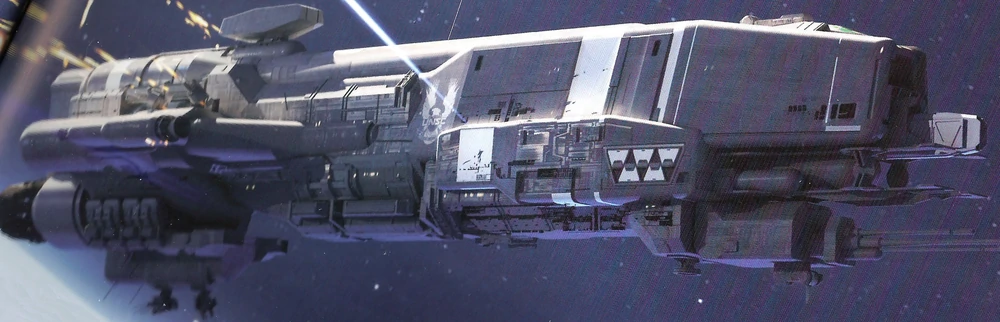
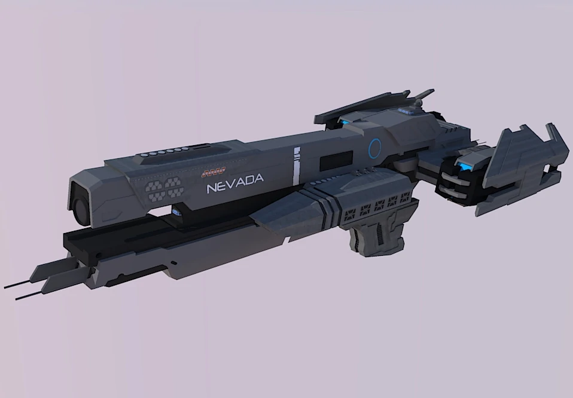
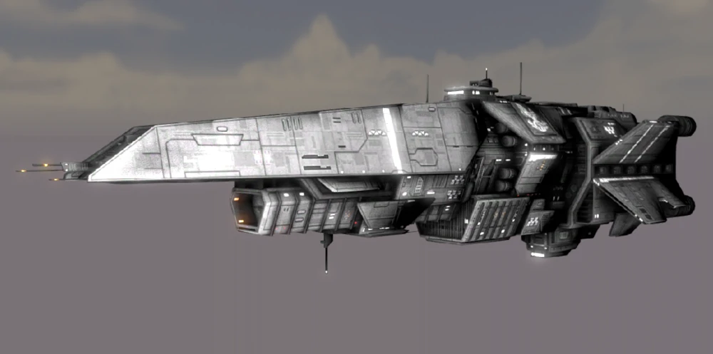
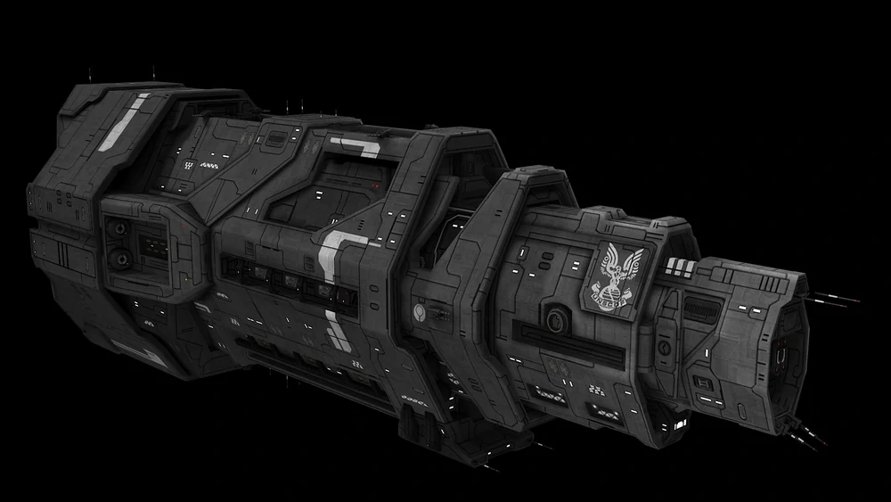
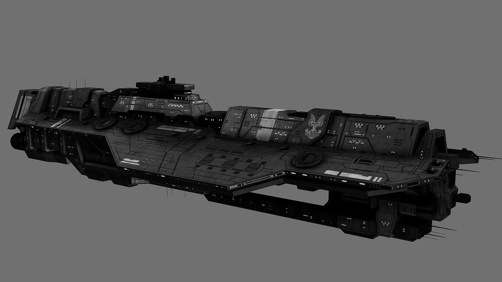
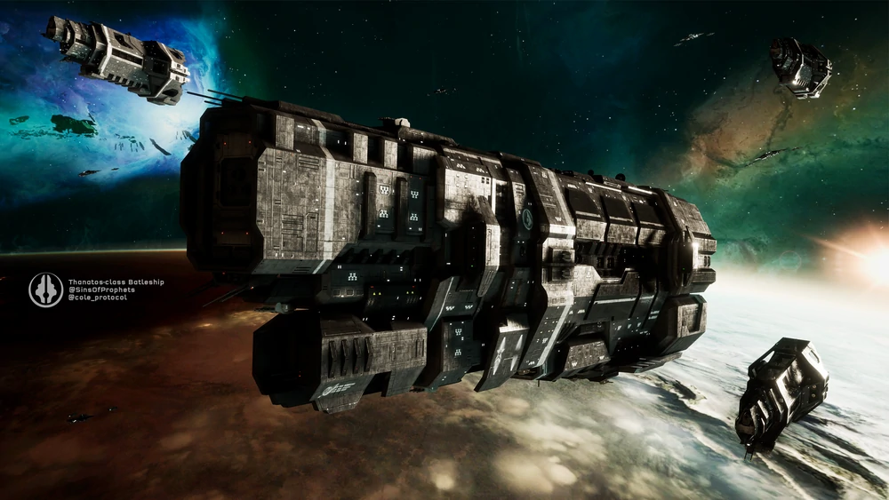

UNSC Ship Classification
| Ship Class |
Ship Dimensions |
Ship Specifications |
| Image |
Class |
Length |
Width |
Slipspace Velocity |
Armament |
|  |
Gladius-Class Heavy Corvette |
243 meters |
51 meters |
2.9 lightyears/day |
- Mac Cannon
- M58 "Archer" Missile pods (2 pods of 26 missiles each)
- 50mm point defence guns (6)
|
|  |
Nevada-Class Heavy Frigate |
604 meters |
219 meters |
5.6 lightyears/day |
- Heavy Coil Mac
- M58 "Archer" Missile pods (24-50 pods of 30 missiles each)
- M712 "Howler" Missile pods (5 pods of 20 missiles each)
- Nuclear Missiles (3)
- 12.7mm point defence guns (34)
- 50mm point defence guns (8)
- 330mm Naval Autocannons (14)
|
|  |
Halberd-Class Destroyer |
485 meters |
154 meters |
3.0 lightyears/day |
- 1170mm MAC battery
- M58 "Archer" Missile pods (4 pods of 26 missiles each)
- Quad 50mm point defence guns (4)
- Nuclear Missile (3)
|
|  |
Halcyon-Class Light Cruiser |
1,170 meters |
352 meters |
5.6 lightyears/day |
- Light-Coil MAC
- M42 "Archer" Missile pods (6 pods of 26 missiles each)
- "Rampart" 105mm point defence guns (8)
- 25mm point defence guns (4)
|
|  |
Epoch-Class Heavy Carrier |
2,563 meters |
844 meters |
10.0 lightyears/day |
- Light-Coil MAC
- Breakwater Naval Coilguns (2)
- M4020 "Bident" Missile pods (20 pods of 3 missiles each)
- M58 "Archer" Missile pods (70 pods of 24 missiles each)
- M66 Sentry Autocannons (12)
- "Rampart" 105mm point defence guns (12)
- "Helix" point defence network (12)
- Nuclear Missiles (8)
|
|  |
Thanatos-Class Heavy Battleship |
3,683 meters |
879 meters |
6.7 lightyears/day |
- Super-Heavy Coil MAC (3)
- Triple "Breakwater" 1270mm/65cal Naval Coilguns (3)
- Twin "Spitfire" 635mm/40cal Naval Coilguns (16)
- M42 "Archer" Missile pods (50 pods of 24 missiles each)
- Quad "Rampart" 105mm point defence guns (24)
- Twin 400mm/40cal Naval Autocannons (12)
- M340A4 "Streak" Missile pods (84 pods of 4 missiles each)
- Hyperion Nuclear Missiles (4)
- Ultra Heavy Ordnance Launch Bay
|